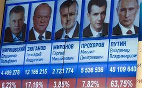
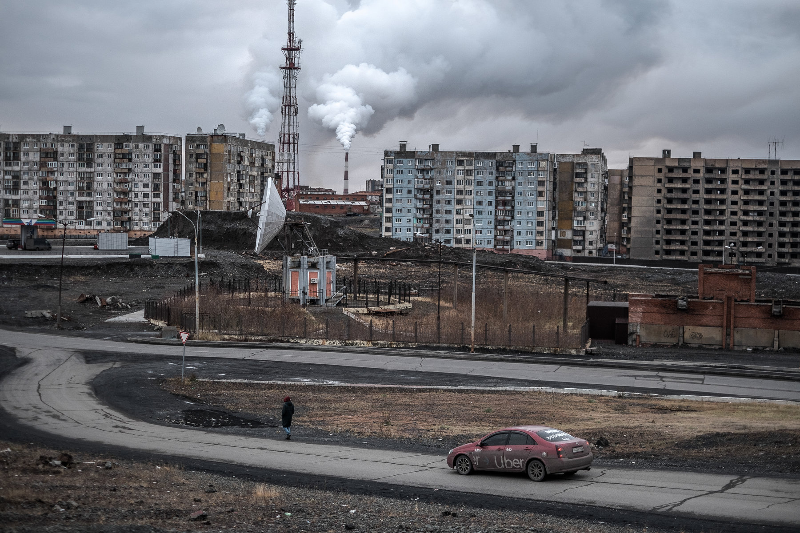

Venäjä on liittovaltio, joka sijaitsee Itä-Euroopassa ja Pohjois-Aasiassa.
Maan pääkaupunki on Euroopan puolella sijaitseva Moskova.
Nykyinen Venäjän federaatio perustettiin 1990-luvun alussa, kun Neuvostoliitto hajosi.
Venäjän federaatio on vuoden 1993 perustuslain mukaan puolipresidentiaalinen tasavalta.
Se on liittovaltio, joka koostuu 83 liittovaltiosubjektista.
Venäjän rajanaapureita ovat Norja, Suomi, Viro, Latvia, Liettua, Puola, Valko-Venäjä, Ukraina, Georgia,
Azerbaidžan, Kazakstan, Kiina, Mongolia ja Pohjois-Korea.
Lisäksi Japaniin, Etelä-Koreaan ja Yhdysvaltojen Alaskaan on vain vähän merimatkaa.
Politiikka

Venäjän perustuslaillisen kriisin jälkeen 12.
joulukuuta 1993 suoritetussa kansanäänestyksessä hyväksytyn nykyisen perustuslain mukaan Venäjä on
semipresidentiaalinen liittovaltio, jossa presidentti on valtionpäämies.
ja pääministeri on hallituksen johtaja. Liittovaltio on rakennettu edustuksellisen demokratian periaatteiden
mukaan. Hallintoa säädellään vallan kolmijako -opin mukaan perustuslain määrittelemällä tavalla.
Perustuslaki toimii maan ylimpänä laillisena dokumenttina sekä yhteiskuntasopimuksena maan kansalaisille.
Puolueet
1. Putinin puolue
2. Kommunistinen puolue
3. Liberaalidemokraattinen puolue
4. Oikeudenmukainen Venäjä
5. Uusi kansa
Ilmasto
Venäjän ilmasto on vaihteleva kokonsa syystä, mutta dominoiva ilmastotyyppi on mannerilmasto,
joka vallitsee sekä Euroopan että Aasian puoleisella Venäjällä lukuun ottamatta tundra-alueita ja maan
kaakkoisnurkkaa
Venäjän vuotuinen keskilämpötila on −0,6 celsiusastetta.
Lämpimin kuukausi on heinäkuu 16,2 celsiusasteen keskilämpötilalla ja kylmin tammikuu −18 celsiusasteen
keskiarvolla.
Venäjän kaikkien aikojen pakkasennätys −67,7 celsiusastetta on mitattu sekä Verhojanskissa 5. ja 7.
helmikuuta 1829 että Oimjakonissa 6. helmikuuta 1933.
Luonto
Pohjoisesta etelään katsottuna Itä-Euroopan tasanko on ensin tundraa, sitten havumetsää (taiga),
sen jälkeen seka- ja lehtimetsää, ja lopuksi nurmimaata ja aroa,
joka muuttuu Kaspianmeren tuntumassa jo lähes aavikoksi kasvillisuuden vaihtuessa ilmaston mukana.

Tyypillistä venäläistä maastoa
Historia
Venäjän valtaisalla alueella on vuosituhansien aikana liikkunut paikasta toiseen lukuisia kansoja ja
heimoja.
Itäslaavit saapuivat Keski-Venäjälle, Dneprin ja Volgan seuduille 500-luvulla.
Yhteisten vihollisten yhdistämät hajanaiset slaaviheimot alkoivat yhdistyä valtioksi 800-luvulla.
Valtakunnan arkkitehteina olivat ruseiksi kutsutut varjaagit, viikingit. Jokia pitkin matkanneet rusit
ottivat haltuunsa Itämereltä Mustallemerelle ulottuneet alueet. Kiovan Rus -valtakunnan keskuksia olivat
Ukrainan nykyinen pääkaupunki Kiova ja Venäjän vanhimpiin kaupunkeihin kuuluva Novgorod.
Kiovan hallitsija Vladimir I Suuri kääntyi kristinuskoon 988.
Kiovan Rus hajosi pieniksi ruhtinaskunniksi 1100-luvulla ja mongolit valtasivat alueet 1200-luvulla,
Novgorodin ruhtinaskuntaa lukuun ottamatta.
Mongolien valta Venäjällä kesti aina 1500-luvulle. Moskovan ruhtinaskunta vahvistui mongolivaltaa uhmaten
1300-luvulta lähtien ja kohosi 1400-luvun lopulle tultaessa johtoasemaan liitettyään muita ruhtinaskuntia
itseensä.
Hallitsijoista alettiin käyttää tsaari-nimitystä 1400-luvulla.
Myös mongolien kaanikunnat liitettiin Moskovan vallan alle yksi kerrallaan 1500-luvulla. Iivana Julman
aikana Venäjä oli laajentunut alueelliseksi suurvallaksi.
Venäjän aseman Euroopan mahtivaltiona varmisti Pietari Suuri lyömällä etelässä turkkilaiset ja lännessä
Ruotsin ja Puolan 1700-luvulla.
Venäjä oli eurooppalainen suurvalta, mutta muusta Euroopasta eristynyt ja yksinvaltaisen hallintorakenteen
ja maanomistusolojen vuoksi köyhä ja takapajuinen. 1700-luvulla valtaosaväestöstä eli maaorjuudessa. Pietari
Suuri kehitti maata länsimaisten mallien mukaan, mutta maaorjuus lakkautettiin virallisesti vasta 1861.
Talonpoikien asema ei kuitenkaan juuri kohentunut, eivätkä lähinnä Euroopan puoleiselle Venäjälle nousseiden
tehtaiden työläisten asema ollut sen parempi. Venäjällä oli ollut talonpoikien ja työläisten kapinoita jo
ennen vuotta 1917, jolloin tsaari syöstiin vallasta.
Sitä seuranneen sisällissodan voitti bolshevikkien puna-armeija 1920.
Bolshevikit muuttivat nimensä kommunistiseksi puolueeksi ja perustivat Neuvostoliiton 1922, johon liitettiin
valloitetut Ukraina, Valko-Venäjä, Armenia, Azerbaidzan ja Georgia.
Neuvostoliitto hajosi vuonna 1991, ja Venäjästä tuli Neuvostoliiton poliittisen, taloudellisen ja
sotilaallisen perinnön haltija.